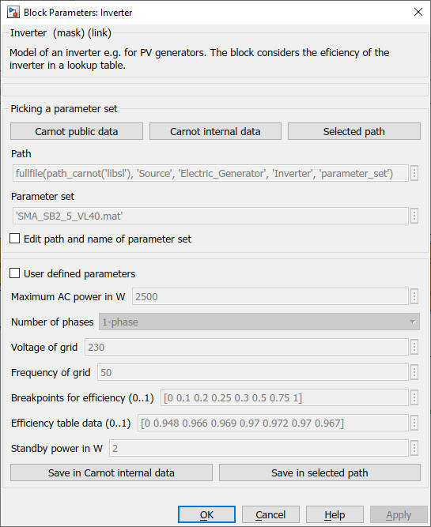

Inverter
Path: CARNOT/Source/Electric_Generator
Purpose:
Inverter for PV systems with an efficiency lookup table.
Description:
The block is a model of a 1-phase or 3-phase inverter DC to AC. In the
3-phase mode the AC power is distributed equally to all three phases.
The model considers the efficiency of the inverter based on a lookup
table for different part-load and over-load conditions. The Input
P_max_set allows to limit the AC power to this setpoint.
The model of the inverter is typically used with a
PV-generator model
Input:
| EB_DC | : | Electric Bus of the direct current from the PV-modules |
| P_max_set | : | Setpoint for maximum AC power output in W |
Output:
| EB_AC | : | Electric Bus of the alternate current |
| InvDat | : | Inverter data bus |
Parameters and Dialog Box:

You may specify your own specifications by activating the 'user parameters'
checkbox.
Parameter sets can be loaded from a configuration file or can
be edited by the user. See
Basic Concepts - 2.2 Specifying Components from the Subsystem
Examples:
Open the example explorer from the Matlab command window
ExampleBrowser
or load the examples via the CARNOT library.
Characteristics:
| Direct Feedthrough | : | Yes |
| Sample Time | : | Inherited from driving block |
| Vectorized | : | No |